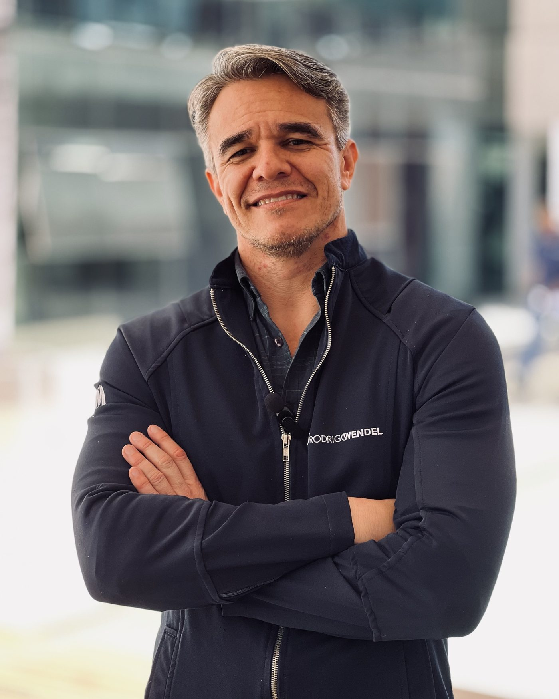
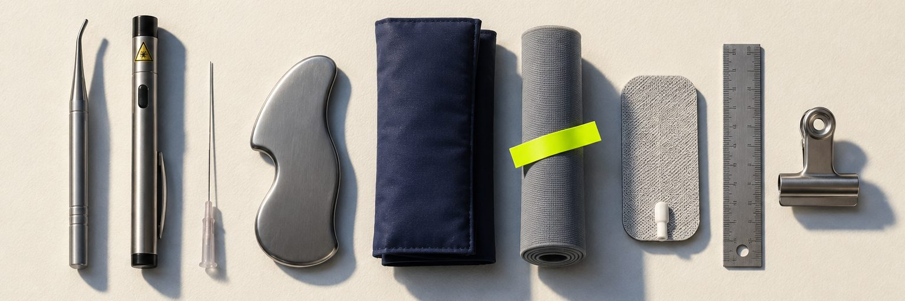

![Formação Viver de DTM]() uma formação da
AcademiaDTM
uma formação da
AcademiaDTM
Cerca de 3 em cada 10 adultos têm DTM
Fonte: Valesan et al., 2021, Clinical Oral Investigations
Boa parte já passa pela sua cadeira. Tratada como bruxismo, porque a formação de origem nunca ensinou a separar os dois quadros.
O paciente que você trata assim hoje já está na sua agenda desta semana
A formação
Um percurso de 10 meses, não um curso gravado
10
43 encontros ao vivo
3 imersões em Brasília
Viver de DTM é a formação do Dr. Rodrigo Wendel para dentistas que já atendem, mas confundem sinal de bruxismo com sinal de DTM. Encontros semanais ao vivo. Três imersões presenciais na clínica dele, em Brasília. Prática supervisionada em paciente real.
Uma formação da Academia DTM.
O ponto cego
DTM é um guarda-chuva. Tem cerca de dez diagnósticos dentro dele
Cada sinal aponta para um caminho diferente. Um quadro muscular. Um quadro articular. Um deslocamento de disco. Três grupos, com critérios, tratamentos e prognósticos distintos entre si.
Sem uma formação que ensine a diferenciar os três, o caminho mais comum é tratar tudo pelo sinal mais conhecido: bruxismo.
Num levantamento com 310 dentistas, cerca de 4 em cada 10 clínicos gerais não se sentiam confiantes para conduzir um caso de DTM. E 61% desconheciam o DC/TMD, o critério diagnóstico internacional.
Fonte: Prabhakar et al., 2024, The Journal of Indian Prosthodontic Society, amostra da Índia
A virada
Quem só tem martelo trata tudo como prego
DTM pede o arsenal inteiro.
Existe um padrão na odontologia. Cada especialidade empurra a própria ferramenta para qualquer caso que chegue. O cirurgião quer operar. O ortodontista quer aparelhar. O protesista quer prótese. O clínico geral quer colocar placa.
Esse padrão tem nome: o Martelo Único. É o resultado de uma formação que ensina uma ferramenta de cada vez, nunca o raciocínio completo.
Viver de DTM ensina o raciocínio completo, em três peças, nesta ordem. Cada uma só funciona por causa da anterior.
Protocolo de leitura em camadas
Ficha pré-consulta, anamnese profunda, exame físico protocolar, leitura de imagem. Fecha um diagnóstico específico dentro dos três grupos.
Arsenal terapêutico em degraus
Do conservador ao invasivo. Um degrau por grupo, com critério objetivo de quando subir. Você passa a escolher entre várias ferramentas.
Percurso comercial
A competência clínica vira receita quando você cobra a avaliação como ato clínico e apresenta o diagnóstico já como abertura do plano de tratamento.
Diagnóstico, tratamento e negócio na mesma trilha. Cursos gravados param no diagnóstico. Especializações tradicionais chegam à prática, mas em dois anos, sem a camada de negócio.
A escada terapêutica · peça 02 do raciocínio
O percurso
Dez meses. Três etapas encadeadas
43 encontros ao vivo, mais 3 imersões presenciais obrigatórias.
Cadência semanal. Encontros em grupo, online, mais 3 imersões na clínica do Dr. Wendel, em Brasília, somando 8 dias de prática hands-on. Turma fechada: você começa e termina com o mesmo grupo.
Fundação e Diagnóstico
Cerca de 4 meses. Você fecha o diagnóstico dentro dos três grupos, integrando anamnese, exame físico e imagem. Fecha com uma imersão em Brasília, em paciente real.
Tratamento
Cerca de 4 a 5 meses. Você monta planos escalonados e executa, com as próprias mãos, os procedimentos conservadores e o protocolo de infiltração e dry needling, sob supervisão direta.
Comercial, Gestão e Marketing Básico
Cerca de 2 meses. Você conduz a consulta de avaliação como ato clínico e comercial, e controla os números do funil. Fecha com uma simulação completa de consulta, ao vivo, diante da turma.
Início em 1º de fevereiro de 2027 · três viagens a Brasília: maio, outubro e novembro · formatura em 29 de novembro de 2027 · certificado de conclusão com carga horária
O critério
Duas dentistas muito diferentes cabem nesta turma
A especialista que já opera, apara ou faz prótese e recebe DTM de rebote. A clínica geral que vive de restauração e canal e quer abrir uma frente nova. O critério abaixo é o que decide.
É para você
Paciente com dor na mandíbula senta na sua cadeira quase toda semana.
Já tratou como bruxismo, teve resultado parcial e desconfia do protocolo.
Consultório rodando, clínica geral ou outra especialidade, agenda cheia.
Disposição para viajar a Brasília em três janelas do calendário 2027.
Quer executar com as próprias mãos, sob supervisão, além da teoria.
Não é para você
Curso 100% gravado, sem encontro ao vivo, é o que você procura.
Ainda não atende com regularidade. Não tem cadeira para aplicar.
Título do CFO em dois anos é outro formato, diferente deste.
Não pode viajar nas três janelas presenciais do calendário 2027.
Quem conduz
Dr. Rodrigo Wendel já perdeu o timing de um caso

Graduação por universidade estadual · mestrado por universidade federal · período de treinamento em Zurique · formou entre 100 e 120 especialistas em DTM no Brasil
No começo da carreira, foi conservador demais em alguns casos. Perdeu o timing certo de intervir. Viu duas pacientes com o mesmo diagnóstico terem desfechos opostos. Uma teve sequela. A outra não. Só porque uma passou pelas mãos dele antes de ele ter o arsenal completo. Foi esse tipo de experiência, repetida por quase três décadas, que o levou a organizar o protocolo que agora ensina.
Ele não promete o que não pode entregar. A régua que aplica com o paciente é a mesma que aplica com quem se forma com ele: falar o que dá certo e o que não dá certo.
O que está dentro
Só a turma fundadora entra na clínica dele
Dois dias de shadowing na clínica real do Dr. Wendel — que some a partir da segunda turma.

Currículo completo
43 encontros ao longo de 10 meses. Diagnóstico, tratamento escalonado e comercial básico.
3 imersões presenciais em Brasília
8 dias de prática hands-on, na clínica real do Dr. Wendel, sob supervisão direta.
Shadowing na clínica real
2 dias acompanhando a rotina clínica, comercial e de gestão dele de perto, em duplas ou trios. Exclusivo da turma fundadora.
Banco de casos clínicos reais comentados
Comentados pelo Dr. Wendel, incluindo o raciocínio de procedimentos que a formação ensina a indicar mesmo sem executar.
Kit de Ativação Imediata
Ficha de anamnese, scripts de recepção e roteiro de devolutiva, liberados antes do primeiro encontro.
DTM Para Todos
Curso introdutório de 9 aulas, recebido antes mesmo da decisão de aplicar.
Reconhecimento de turma fundadora
E prioridade de vaga na mentoria de continuidade, quando ela abrir.
Certificado de conclusão
Com carga horária ao final da formação.
O investimento e as condições de pagamento são apresentados na conversa de avaliação de vaga, junto com o restante da proposta.
A vaga
Entre 8 e 12 vagas. O limite é a supervisão
8–12
vagas na turma fundadora
o teto vem da capacidade de supervisão
A execução de infiltração anestésica e dry needling em paciente real exige supervisão individual apertada. A disponibilidade de pacientes elegíveis, dentro da janela de cada imersão, é limitada.
Rodar a estação em duplas ou trios reduz a pressão sobre esse número, mas não remove o teto. Uma turma maior do que a capacidade real de supervisão significa parte da turma sem executar o que foi prometido. Esta formação não vende essa promessa.
Não existe contagem regressiva. Não existe “últimas vagas” fabricada. A vaga se encerra quando o número de alunos matriculados atinge o teto real da turma.
Perguntas
Perguntas que toda dentista nesta posição já se fez
07
perguntas que aparecem em toda conversa de avaliação
Minha cidade tem paciente de DTM suficiente para justificar essa formação?
Uma meta-análise com quase 21 mil participantes encontrou DTM em 29,5% da população, e em 36,7% das mulheres. O volume já está na sua agenda atual. Falta o protocolo para reconhecer o caso.
Fonte: Alqutaibi et al., 2025, Journal of Oral & Facial Pain and Headache
Curso online ensina odontologia de verdade?
Esta não é uma formação 100% online. São 3 imersões presenciais obrigatórias, na clínica do Dr. Wendel, em Brasília, com prática hands-on em paciente real.
Qual é o investimento?
O investimento é apresentado na conversa de avaliação de vaga, junto com o restante da proposta. A conversa não compromete a nada.
Já fiz uma pós-graduação e não voltou o investimento. Por que essa seria diferente?
Porque a maioria das pós-graduações entrega só a técnica clínica. Viver de DTM entrega a técnica somada ao percurso comercial completo: cobrar, converter e reter.
Não tenho tempo. Já sou sobrecarregada. Como encaixo isso na rotina?
O formato é um encontro semanal, ao vivo. O ganho comercial começa nas primeiras semanas.
Prefiro presencial, aprender fazendo. Isso aqui é assim?
As 3 imersões existem para isso. Cada uma fecha uma etapa com prática supervisionada e validação ao vivo, em paciente real.
Não quero virar especialista, só parar de encaminhar o paciente que já está na minha cadeira. Serve pra mim?
Sim. Serve tanto a quem quer se tornar referência quanto a quem só quer parar de devolver o caso que já senta na própria cadeira toda semana.
A aplicação
O paciente que você trata como bruxismo já está na sua agenda desta semana
Aplicar abre uma conversa sem compromisso. A compra, se acontecer, vem depois.
Viver de DTM é uma conversa, não um botão de compra. Aplicar leva três minutos e abre um processo de seis passos, sem custo em nenhum deles até a matrícula.
06
estações entre a aplicação e a matrícula
nenhuma delas custa nada
-
01
Você aplica
Formulário curto sobre sua rotina clínica, seus casos de DTM e sua disponibilidade para as três imersões.
-
02
A equipe analisa o fit
O critério é clínico. Nem toda aplicação vira convite para conversa.
-
03
Você recebe a confirmação e agenda a conversa
Um horário, com a equipe do Dr. Wendel.
-
04
Conversa de avaliação de vaga
Ao vivo, sobre a sua rotina e os casos que já passam pela sua cadeira. Sem roteiro de vendas, sem pressão na hora.
-
05
Apresentação da proposta completa
É aqui que o investimento e as condições de pagamento entram, com o contexto todo já construído.
-
06
Sua decisão
Sem prazo artificial imposto na ligação. A vaga se encerra quando a turma fecha.
Enquanto essa conversa não acontece, o paciente de DTM continua sentando na sua cadeira, do jeito que sempre sentou. Aplicar é o que muda isso.